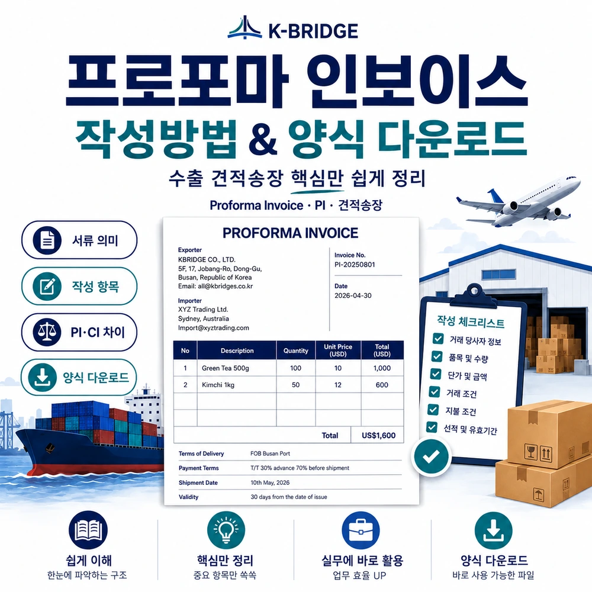
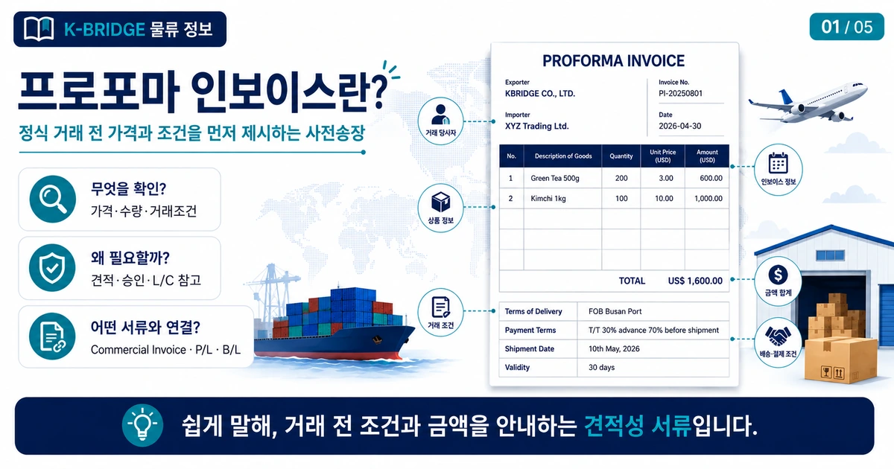
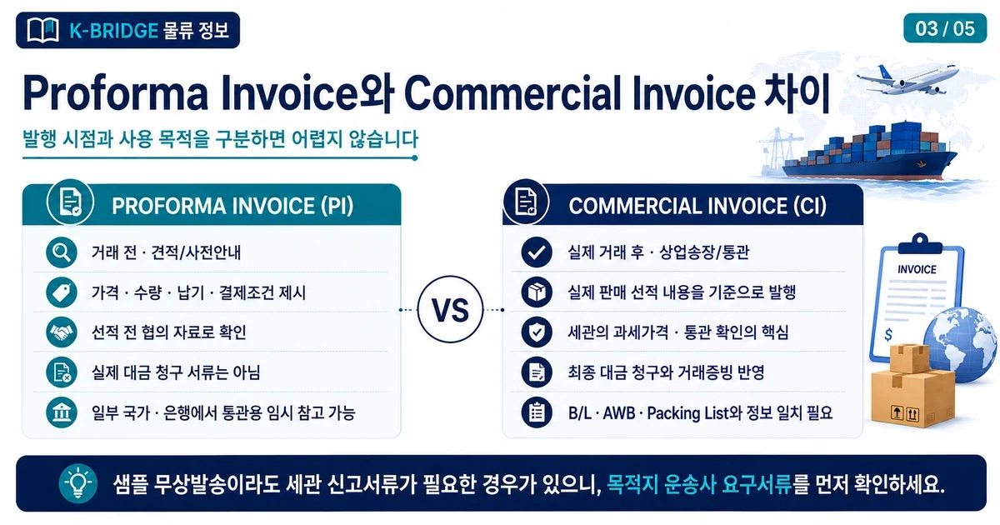
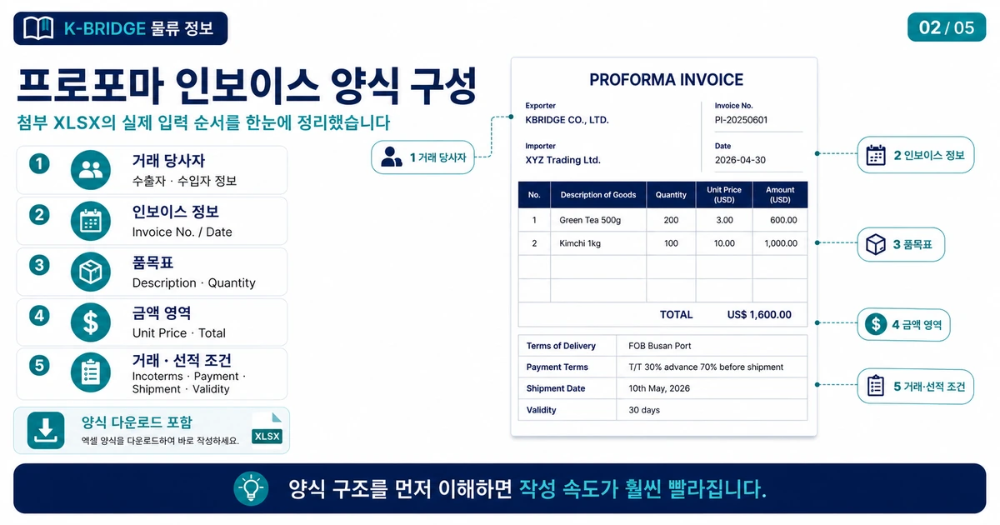
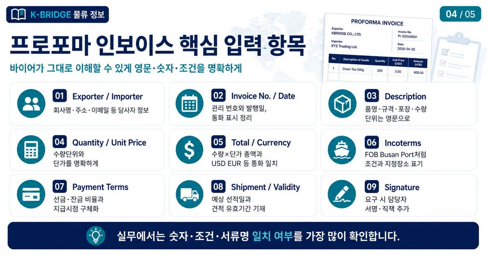
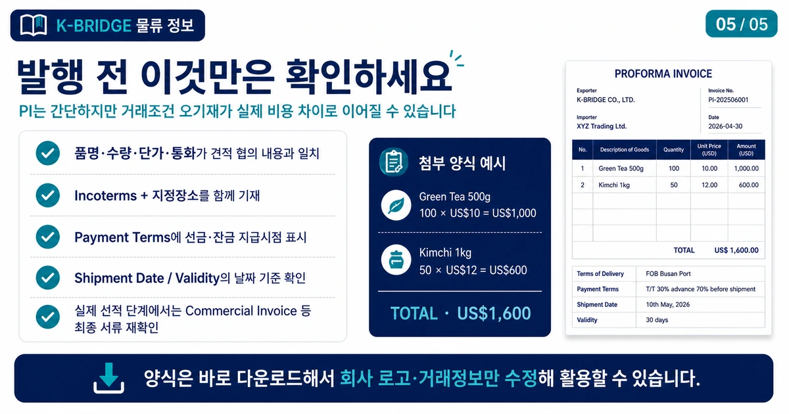

핵심 요약
Proforma Invoice(프로포마 인보이스, PI)는 실제 거래·선적 전에 판매자가 바이어에게 품목·수량·가격·거래조건·결제조건·예상 선적일 등을 제시하는 사전송장 또는 견적송장입니다. Commercial Invoice와 형식은 비슷하지만 발행 시점과 사용 목적이 다르므로 실제 선적 단계에서는 최종 상업송장과 목적지 요구서류를 다시 확인해야 합니다.
Proforma Invoice란?
Proforma Invoice는 수출자가 실제 판매나 선적이 확정되기 전에 바이어에게 거래 조건을 미리 제시하는 문서입니다. 국내 실무에서는 프로포마 인보이스, PI, 견적송장, 사전송장이라고 부릅니다.

일반 견적서보다 Invoice 형식에 가깝고, 제품명과 수량뿐 아니라 단가, 통화, Incoterms, Payment Terms, 예상 선적일, 유효기간까지 한 문서에서 확인할 수 있어 해외 거래의 조건 확인과 사전 승인 단계에서 많이 사용됩니다.
프로포마 인보이스 양식 다운로드
아래 파일은 처음 첨부해주신 Proforma Invoice XLSX 양식을 그대로 기준으로 한 실무용 엑셀 파일입니다. 수출자·수입자 정보부터 품목, 금액, 거래조건, 결제조건, 선적예정일과 유효기간까지 순서대로 입력할 수 있습니다.
KBRIDGE Proforma Invoice 양식
파일 형식: XLSX · 구성: Proforma Invoice 시트 · 사용 목적: 수출 견적송장·사전송장 작성

양식은 회사 로고와 회사 정보, 거래 품목, 단가, 조건만 수정해 사용할 수 있습니다. 바이어나 은행에서 별도 PI 양식을 지정한 경우에는 상대방 양식을 우선 확인하세요.
작성 전 준비사항
PI를 작성하기 전에는 바이어와 협의한 거래 정보를 먼저 정리해야 합니다. 견적 단계의 문서라도 숫자나 조건이 잘못되면 이후 선금 결제, 발주, 선적 조건 협의에서 그대로 오류가 이어질 수 있습니다.
- 수출자와 수입자의 정확한 회사명·주소·이메일을 준비합니다.
- 제품명, 규격, 수량, 수량 단위와 단가·통화를 정리합니다.
- FOB, CIF, DAP 등 Incoterms와 지정장소를 함께 확정합니다.
- 선금·잔금 비율과 지급 시점을 포함한 Payment Terms를 확인합니다.
- 예상 선적일과 PI의 Validity(견적 유효기간)를 정합니다.
Proforma Invoice와 Commercial Invoice 차이
두 문서는 형식이 비슷하지만 사용 시점과 목적이 다릅니다. 가장 쉽게 구분하면 PI는 거래 전 조건 확인, Commercial Invoice는 실제 거래·선적 내용을 반영한 상업송장입니다.

핵심 입력 항목 작성법
프로포마 인보이스에서 가장 중요한 것은 거래 당사자, 품명·수량·단가, 총액과 통화, 거래·결제 조건을 서로 모순 없이 적는 것입니다. 영문 표기와 숫자는 바이어가 그대로 이해할 수 있도록 명확하게 작성합니다.

| 항목 | 작성 방법 |
|---|---|
| Exporter / Importer거래 당사자 | 수출자와 수입자의 회사명, 주소, 이메일 등 기본 정보를 정확히 입력합니다. |
| Invoice No. / Date관리번호·발행일 | 사내 관리번호와 발행일을 적습니다. 추후 CI와 연결해 관리하기 쉽게 번호 체계를 정하는 것이 좋습니다. |
| Description품명 | 제품명, 규격, 모델명 등 거래 대상이 명확하도록 영어로 작성합니다. |
| Quantity / Unit Price수량·단가 | EA, PCS, SET 등 수량 단위와 단위당 가격을 명확히 적습니다. |
| Total / Currency총액·통화 | 수량×단가의 합계가 맞는지 확인하고 USD, EUR 등 거래 통화를 일관되게 표시합니다. |
| Incoterms거래조건 | FOB Busan Port처럼 Incoterms 규칙과 지정장소를 함께 적습니다. |
| Payment / Shipment / Validity결제·선적·유효기간 | 선금·잔금 지급조건, 예상 선적일, 견적 유효기간을 구체적으로 적습니다. |
발행 전 체크포인트
PI는 비교적 간단한 문서지만, 실제 거래조건 협의의 기준이 되기 때문에 작성 후 아래 항목을 반드시 한 번 더 확인하는 것이 좋습니다.

- 품명·수량·단가·통화가 바이어와 협의한 견적 내용과 일치하는지 확인합니다.
- Incoterms만 단독으로 쓰지 말고 지정장소까지 함께 적습니다. 예: FOB Busan Port.
- Payment Terms에는 선금·잔금 비율과 지급 시점을 가능한 한 구체적으로 표시합니다.
- Shipment Date와 Validity는 각각 예상 선적일과 견적 유효기간인지 날짜 기준을 구분합니다.
- 실제 선적·통관 단계에서는 Commercial Invoice, Packing List, B/L 또는 AWB 등 최종 서류와 정보를 다시 맞춥니다.
자주 묻는 질문
Q. Proforma Invoice와 Commercial Invoice는 같은 서류인가요?
Q. 프로포마 인보이스는 꼭 영어로 작성해야 하나요?
Q. PI에 꼭 들어가야 하는 항목은 무엇인가요?
Q. PI를 Commercial Invoice 대신 통관에 사용할 수 있나요?
수출 견적과 서류 작성이 헷갈린다면 케이브릿지와 확인하세요
품목, 수량, 출발지, 도착지와 거래조건만 정리되어도 해상·항공·해외특송 운송 방식과 필요한 기본 수출서류를 함께 검토할 수 있습니다.